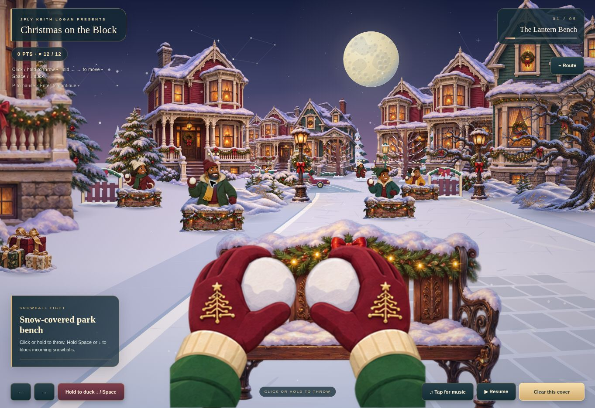

The Lantern Quarter
A painted Christmas neighborhood, built into the existing playable opening encounter. The camera travels past separate houses, trees, lamps and cover; the street is not a single enlarged backdrop.

AFTERWhat was holding it back
The active renderer is custom Canvas 2D with projected, depth-sorted sprites. Three.js files exist in the repository but do not render this game. Repetitive flat SVG facades, simplified foliage, generic contact shadows, oversized foreground cover and a disconnected HUD made the world feel unfinished. There are no active primitive 3D characters to replace.
The art direction
Illustrated, cinematic Christmas storybook art, inferred from the supplied warm neighborhood and burgundy circuit-tree mittens. Cranberry and evergreen architecture, amber windows, cool lavender snow, carved wood and brass details. Desktop and mobile browsers; a 60 FPS target, not a measured guarantee.
Implemented in the playable scene
- Ten new transparent environment cutouts: two Victorian houses, carved bench, fir, lantern, holly bed, decorated brick barrier, bare oak, snow drift and presents.
- Independent world placement, preserved aspect ratios and padded atlas crops. Opening cover is scaled to a believable height; all four opponents have clear sightlines.
- Painted mitten throw frames and textured snow-impact frames connected to the existing right-hand release, transfer and scoop cycle.
- Soft contact shadows, clearer depth haze, snow and paving details, plus the existing progressive storm, detailed moon, constellations, meteors and Santa flyover.
- Midnight enamel, brass and cranberry HUD, contextual cover instructions, responsive layouts and a direct opening-encounter practice button.
- Existing movement, ducking, damage, rapid-fire crossing, growing snowman finale, music and route progression retained.
New transparent artwork


Verification
Browser-tested the opening scene and a successful throw. Inspected desktop, 390 × 844 portrait and 780 × 440 landscape views. Automated checks pass for gameplay progression, damage, cover blocking, hand timing, crossing, finale, weather and production asset references. Cached sprite resolutions reduced sampled render work to about 8 ms average, with a 24 ms 95th percentile, in the cloud browser.
Remaining production work
This is the representative-scene pass. Later encounters still mix older props with the new house facades. Characters retain the established illustrated cast; they are not newly animated 3D models. Lighting is painted and composited, not dynamic 3D lighting. Physical phone/GPU testing and sustained 60 FPS verification remain; cloud animation scheduling is throttled. Portrait targets are smaller, so landscape is the preferred play orientation.
New environment artwork was generated specifically for this project. Existing project character, glove, effect and soundtrack assets are retained. No external stock pack was downloaded. Crop manifest · Production notes